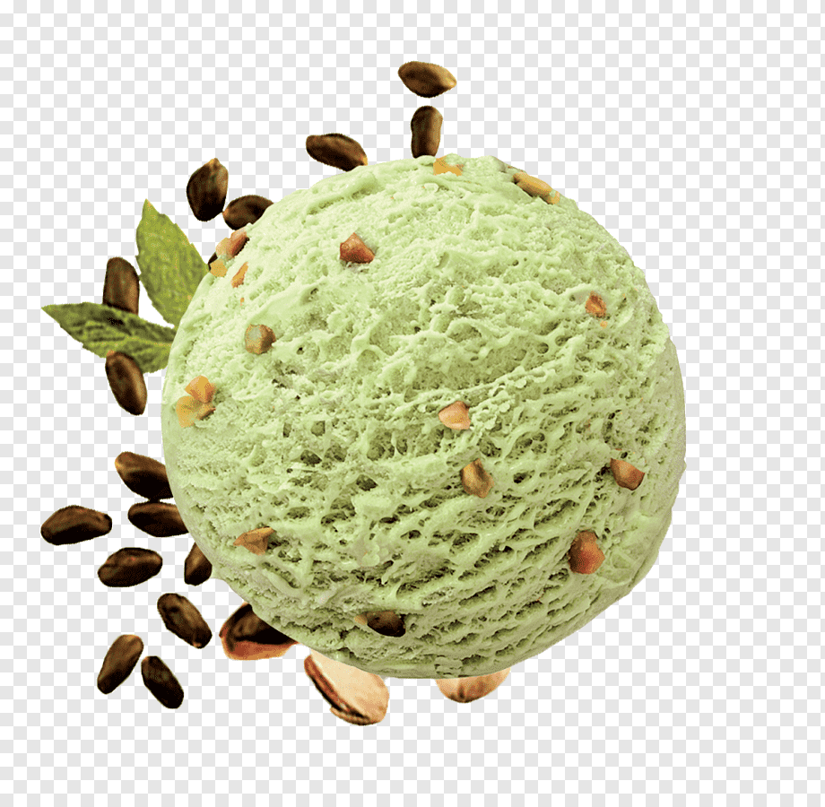
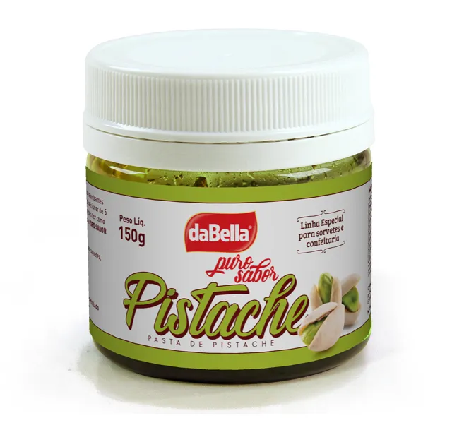

MUNDO DO PISTACHE
Várias opções de comidinhas feitas com pistache.
Segunda-feira
Horário de segunda-feira dia 26/02

Terça-feira
Horário de terça-feira dia 27/02

Quarta-feira
Horário de quarta-feira dia 27/02
 Quinta-feira
Horário de quinta-feira dia 27/02
Quinta-feira
Horário de quinta-feira dia 27/02
 Sexta-feira
Horário de sexta-feira dia 27/02
Sexta-feira
Horário de sexta-feira dia 27/02
PARA VER TODOS OS ARQUIVOS
Acesse o GitHub para pegar os exemplos feitos
PARA BAIXAR ESSE CONTEUDO EM PDF
Baixe aqui seu PDF dos principais comandos.
PARA PUBLICAR O SITE
Rotinas para publicar o site.